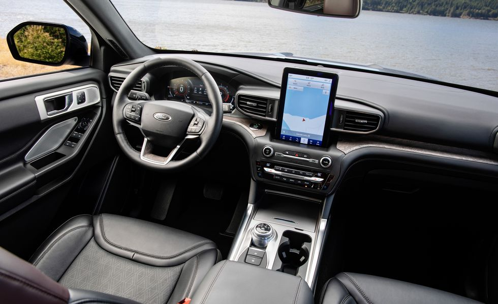

Random Information about The Ford Explorer
The early 1990s saw a surge in the sales of SUVs, and the Ford Explorer played a role in that. The 2020 model is packed with desirable features. The Ford is designed specifically for transporting families, with three rows of seating and tons of cargo capacity. A decent turbocharged four-cylinder, a cost-effective hybrid alternative, and a potent twin-turbo V-6 are among its available powertrains. The wide range of options available for the Explorer offers something for everyone in addition to a smooth ride and a distinctive sport-tuned model. Additionally, it comes with a ton of standard features like Apple CarPlay and Android Auto compatibility, automated emergency braking, and blind-spot monitoring. The SUV that started it all, the 2020 Explorer, despite its lackluster cabin and cramped third row
Additional Information
The finest Explorer for the money, in our opinion, is the mid-range Limited variant. Additionally, it is the only one with the $4150 additional hybrid powertrain that is offered. Although the hybrid makes sense for drivers who can benefit from its impressive EPA-rated city mpg, we discovered that the basic turbocharged four-cylinder engine is more powerful and efficient on the interstate. Likewise, even with the towing package installed, it can still tow a massive 5300 pounds. For an extra $2,000, we'd add all-wheel drive. Aside from that, we'd stick with the appealing basic features of the Limited trim. These include a power-folding third row, leather upholstery, a heated and power-adjustable steering wheel, a 12-speaker B&O audio system, 20-inch wheels, and improved driver assistance features like adaptive cruise control.